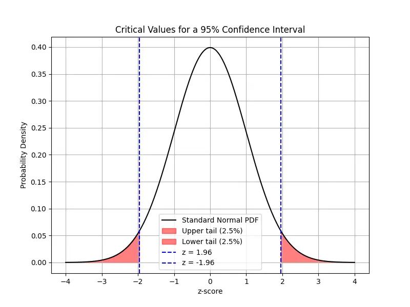
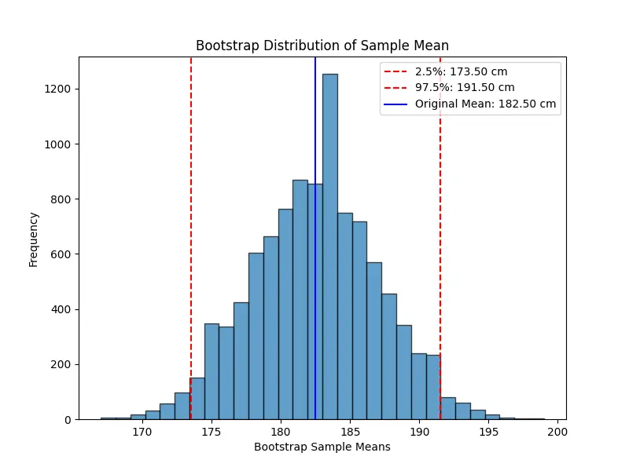

Null Hypothesis Significance Test
Once we have a statistical model (or hypothesis), we need to assess whether it's plausible given our data
\(\mathcal{D}\). In Part 9, we developed maximum likelihood estimation
as a method for fitting parameters to data. MLE answers the question "what is the best estimate?" but it does not answer a
complementary question: "is the effect we observe real, or could it be due to chance?"
Hypothesis testing provides a principled framework for making such decisions under uncertainty.
Although Bayesian inference can replace many frequentist techniques and
is especially popular in modern machine learning, frequentist methods remain valuable - they are often simpler to compute,
more standardized, and provide complementary insights. Here, we introduce the null hypothesis significance test (NHST).
Definition: Hypotheses
A hypothesis test involves two competing statements:
- Null Hypothesis \(H_0\):
The default assumption (e.g., "the treatment has no effect").
- Alternative Hypothesis \(H_1\):
The claim we wish to support (e.g., "the treatment has a positive effect").
Hypothesis testing can be viewed as a binary classification problem:
given data \(\mathcal{D}\), decide between \(H_0\) and \(H_1\).
Our reasoning follows the logic of proof by contradiction: if the observed data would be extremely unlikely under \(H_0\),
we reject the null hypothesis in favor of \(H_1\). However, rejecting \(H_0\) does not prove \(H_1\) is true,
and failing to reject \(H_0\) does not prove \(H_0\) is true - it only means the evidence is insufficient.
Because our conclusion can be wrong, we must account for two types of error:
Definition: Type I and Type II Errors
- Type I error (false positive):
Rejecting \(H_0\) when it is actually true.
- Type II error (false negative):
Failing to reject \(H_0\) when \(H_1\) is actually true.
The Type I error rate \(\alpha\) is called the significance level of the test.
It represents the probability of mistakenly rejecting \(H_0\) when it is true, and is typically
set to 0.05 or 0.01 in practice.
To decide whether to reject \(H_0\), we compute a test statistic \(\text{test}(\mathcal{D})\)
- a function of the data that summarizes the evidence against \(H_0\). We then compare it to the distribution of
\(\text{test}(\tilde{\mathcal{D}})\) under hypothetical datasets \(\tilde{\mathcal{D}}\) drawn assuming \(H_0\) is true.
Definition: p-Value
The p-value is the probability, under \(H_0\), of obtaining
a test statistic at least as extreme as the one observed:
\[
p = P\!\left(\text{test}(\tilde{\mathcal{D}}) \geq \text{test}(\mathcal{D}) \;\middle|\; \tilde{\mathcal{D}} \sim H_0\right).
\]
If \(p < \alpha\), the observed result is deemed unlikely under \(H_0\), and we reject the null hypothesis.
It is essential to interpret p-values correctly. A p-value of 0.05 does not mean that \(H_1\) is true with
probability 0.95. The p-value measures the compatibility of the data with \(H_0\), not the probability that \(H_0\) is
true or false.
While NHST provides a systematic framework, it has well-known limitations:
- Statistical significance does not imply practical significance.
Even if \(H_0\) is rejected, the effect size may be too small to matter.
- p-values depend on sample size. With very large datasets,
even tiny, practically irrelevant differences may yield small p-values.
- Bayesian approaches offer an
alternative by directly computing the probability of hypotheses given the data,
rather than relying on fixed significance thresholds.
To make the NHST framework concrete, we now work through a specific example
using the t-test.
t-Tests
When the population standard deviation \(\sigma\) is unknown - which is the typical situation in practice -
we replace it with the sample standard deviation \(s\) and use the Student's t-distribution
instead of the normal distribution. The resulting procedure is called a t-test.
Example:
Suppose we are analyzing the test scores of students in a school. Historically, the average test score is 70. A researcher
believes that a new teaching method has improved scores. To test this, we collect a sample of 30 students' scores after
using the new method.
- \(H_0\): The new method has no effect, meaning the true mean is still 70.
- \(H_1\): The new method increases the average score, meaning the mean is greater than 70.
We collected a sample of (\(n = 30\)) students with the following observed statistics:
- Sample mean: \(\bar{x} = 75.20\).
- Sample standard deviation \(s = 9.00\)
where
\[
s = \sqrt{\frac{1}{n-1}\sum_{i=1}^n (x_i - \bar{x})^2}.
\]
Since the population standard deviation \(\sigma\) is unknown, we use one-sample t-test.
The test statistic is computed by:
\[
t = \frac{\bar{x} - \mu_0}{s / \sqrt{n}} = \frac{75.20 - 70}{9.00 / \sqrt{30}} \approx 3.16.
\]
The p-value is the probability of observing a test statistic as extreme as (or more extreme than) the calculated
t-value under the null hypothesis. This follows a Student's t-distribution
with \(n - 1 = 29 \) degrees of freedom.
Then we have \(p \approx 0.0018\) via some numerical computation (the area in the upper tail of the \(t_{29}\) distribution).
Set the significance level \(\alpha = 0.05\).
Since \(p < 0.05\), we reject \(H_0\). Therefore, there is strong statistical evidence that the new teaching method
increases students' test scores.
We can only say that the data we observed (test scores) are very unlikely under the assumption that the true mean
is still 70. It does NOT mean that..
- the new teaching method definitely increases test scores.
- the probability that \(H_0\) is true is 0.0021.
- the effect is practically significant.
Confidence Intervals vs Credible Intervals
Hypothesis testing gives a binary answer - reject or fail to reject - but it says nothing about how close
our estimate might be to the true parameter. In practice, we often want a range of plausible values for \(\theta\).
Both frequentist and Bayesian statistics provide such intervals, but they differ fundamentally in
interpretation.
Definition: Confidence Interval (Frequentist)
A \(100(1 - \alpha)\%\) confidence interval is a random interval
\([L(\mathcal{D}),\, U(\mathcal{D})]\) such that, if we were to repeat the
experiment many times and construct such an interval each time, approximately
\(100(1 - \alpha)\%\) of those intervals would contain the true parameter \(\theta\).
A critical subtlety: a 95% CI does not mean "there is a 95% probability that \(\theta\)
lies in this interval." In frequentist statistics, \(\theta\) is a fixed constant - it
either lies in the interval or it does not. The probability statement refers to the procedure,
not to any single interval.
In Bayesian statistics, the interpretation is reversed:
the data are fixed (since they are observed) and the parameter is treated as a random variable with a
posterior distribution. A credible interval directly states that, given the data and the prior,
the parameter falls within the interval with the stated probability. This is often considered more intuitive.
Example:
Suppose we toss a coin \(n = 100\) times and observe 60 heads. Now we want to estimate the probability of getting heads.
First, we try the frequentist approach. The point estimate for the probability of heads is
\(\hat{p} = \frac{60}{100} = 0.6\), and the standard error(SE) for a proportion is given by:
\[
\begin{align*}
\text{SE} &= \sqrt{\frac{\hat{p}(1-\hat{p})}{n}} \\\\
&= \sqrt{\frac{0.6 \times 0.4}{100}} \\\\\
&\approx 0.049.
\end{align*}
\]
For a 95% CI using normal approximation, the critical value is \(z_{0.025} \approx 1.96\). Then CI is given by
\[
\begin{align*}
\text{CI} &= [\hat{p}-z_{0.025} \times \text{SE}, \quad \hat{p}+z_{0.025}\times \text{SE}] \\\\
&\approx [0.504, 0.696].
\end{align*}
\]
If we repeated the experiment (tossing the coin 100 times) many times and computed a 95% CI each time, about 95% of those
intervals would contain the true \(p\).

Note: A z-score is any value that has been standardized to represent the number of standard deviations
away from the mean. The critical value is a specific z-score used as a threshold in hypothesis testing or
confidence interval calculations. In our case, \(z_{0.025} \approx 1.96\) is the critical value that separates the central
95% of the distribution from the outer 5% (2.5% in each tail).
In Bayesian approach, we assume a uniform prior for the probability \(p\) which is equivalent to
a Beta distribution:
\[
p \sim \text{Beta}(1, 1).
\]
With 60 heads and 40 tails, the likelihood is given by a binomial distribution. In the Bayesian framework, the
posterior distribution is:
\[
p \sim \text{Beta}(1+60, 1+40) = \text{Beta}(61, 41).
\]
(Note: The Beta distribution is a conjugate prior for the binomial likelihood.
This means that when the likelihood is binomial, which is the case for coin tosses, using a Beta prior results in a
posterior distribution that is also a Beta distribution.)
A 95% credible interval (CrI) is typically obtained by finding the 2.5th and 97.5th percentiles of the posterior
distribution. These percentiles can be computed using the inverse cumulative distribution function (CDF) for the
Beta distribution. For example,
\[
\begin{align*}
\text{CrI} &= [\text{invBeta}(0.025, 61, 41), \quad \text{invBeta}(0.975, 61, 41)] \\
&\approx [0.50, 0.69].
\end{align*}
\]
Given the observed data and the chosen prior, there is a 95% probability that \(p\) falls between 0.50 and 0.69.
This interval directly reflects our uncertainty about \(p\) after seeing the data.
You may find the Bayesian credible interval "more intuitive" because it directly answers the question, “What is the probability
that the parameter falls within this interval given the data and our prior beliefs?” On the other hand, Frequentist methods
provide guarantees on long-run performance without the need for a prior, which can be an advantage in settings where subjective
beliefs are hard to justify.
Bootstrap
The confidence intervals derived above rely on distributional assumptions - typically, that the sampling
distribution is approximately normal by CLT. When the sample size is small, the estimator is a complex function
of the data, or the underlying distribution is far from normal, these analytical approximations may be
unreliable. The bootstrap method provides a powerful, assumption-free alternative.
The idea is conceptually simple: treat the observed sample as a proxy for the population and resample from it
with replacement to generate many bootstrap samples. By computing the estimator on each bootstrap
sample, we obtain an empirical approximation of the sampling distribution. This approach provides a flexible,
non-parametric way to assess uncertainty and construct confidence intervals.
Example:
we have a small dataset of 10 people's heights (in cm):
\[
x = [160,165,170,175,180,185,190,195,200,205].
\]
The sample mean is \(\hat{\mu} = 182.5\). Since our sample size is small, we might not be able to assume the sampling
distribution of the mean is normal. Instead of relying on theoretical approximations, we use bootstrap resampling to
approximate it empirically.
Here, we randomly draw 10 values from the original sample with replacement. Some values may be repeated, and others may be
missing in a given resample. For example, we might obtain:
\[
\begin{align*}
&x_1 = [165,175,175,190,185,160,200,195,180,185], \\\\
&\hat{\mu} = 181.0.
\end{align*}
\]
Then we repeat this process many times (e.g., 10,000 times). Each time, we create a new resampled dataset, compute its mean,
and store it. Once we have 10,000 bootstrap sample means, we can use them to estimate the confidence interval:

Connections to Machine Learning
Hypothesis testing and confidence intervals appear throughout machine learning practice.
When comparing two models, paired t-tests or bootstrap confidence intervals
on the performance difference help determine whether one model is genuinely better or the gap is within sampling noise.
The confusion matrix and ROC analysis extend hypothesis testing ideas
to classifier evaluation. The bootstrap is particularly valuable in deep learning, where the sampling distribution
of complex metrics (e.g., BLEU scores, F1) has no closed-form expression.
In Bayesian inference, credible intervals provide a principled alternative
that directly quantifies parameter uncertainty.
With the tools for estimation (MLE) and inference (hypothesis testing, confidence intervals) established, we can now
apply them to one of the most important models in statistics. In the next part,
we develop linear regression as the intersection of least-squares optimization and maximum likelihood estimation
under Gaussian noise.